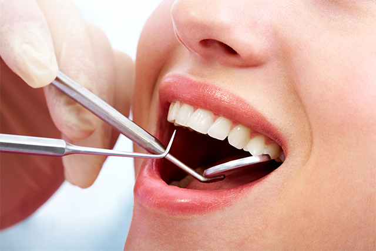
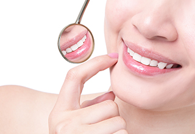
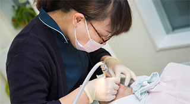
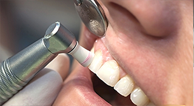
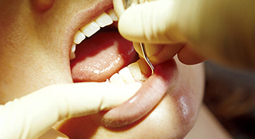
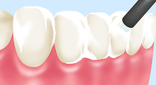
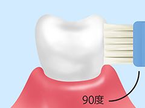
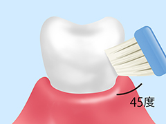
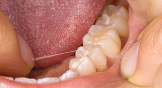
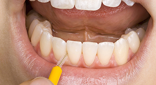

Prevent予防
健康を維持するために～予防～

予防意識が高まっています

厚生労働省では、歯科保健の情報把握とこれからの歯科医療対策推進の基礎資料にするため、「歯科疾患実態調査」を実施しています。また、1989年からは「80歳になっても20本以上、自分の歯を残しましょう！」という「8020運動（ハチマルニイマル運動）」を推進。
「歯科疾患実態調査」によると、「8020」を達成している方は平成23年の調査結果では40.2％でしたが、平成28年の調査では51.2％にまで増加しているという結果が出ました。この結果を見る限り、日本でも予防意識は高まっている傾向にあるといえるでしょう。
予防メンテナンスは歯科衛生士が行います

歯科衛生士は、口腔ケアのプロフェッショナルです。定期検診では、主に歯科衛生士が歯と歯ぐきのチェックや、PMTCなどの歯の専門的なクリーニングを実施。クリーニングは、毎日のセルフケアでは落としきれない歯垢（プラーク）や歯石を除去できるため、虫歯や歯周病の予防につながります。
また、定期検診を受けていれば、すでに病気が発症していたとしても自覚症状が現れる前のごく初期段階で見つけられるため、比較的簡単な治療で済むのがポイント。早期発見・早期治療につながり、歯の健康を保てます。
ほかにも、エアフローを活用した歯面の汚れ・着色の除去にも対応しています。ご希望の歯科衛生士が担当することも可能ですので、お気軽にご相談ください
当院の予防ケアメニュー
PMTC（プロフェッショナル・メカニカル・トゥース・クリーニング）

専用器具を使用した、歯のクリーニングです。毎日のセルフケアでは落としきれない、歯間や歯と歯ぐきの溝の汚れ、歯垢やバイオフィルム（細菌のかたまり）を徹底的に除去。仕上げに、歯をツルツルと滑らかにみがくことで、汚れの再付着を防ぎます。
歯周ポケットクリーニング

歯と歯の間の溝「歯周ポケット」の中は汚れがたまりやすい部位です。歯周ポケットの状態をチェックし、歯垢や歯石をかき出して除去します。
フッ素塗布

歯の再石灰化を促し、歯質を強化する働きが期待できるフッ素を歯面に塗布します。フッ素には細菌の活性化を抑える効果もあるため、定期的な塗布が虫歯予防に有効です。
ブラッシング指導
歯の生え方や状態は一人ひとり異なります。また、ブラッシングの際におかしなクセがあると、汚れが残りやすい部位が生じてしまうかもしれません。ブラッシング指導では、一人ひとりに合わせた汚れの落とし方をアドバイスします。
ご家庭でできるケア方法
ブラッシング
毎日のセルフケアの基本はブラッシングです。歯ブラシの当て方や動かし方は、大きく分けて2種類あります。それが「スクラッピング法」と「バス法」です。
-

スクラッピング法
歯の表面に直角に歯ブラシを当てます。力をかけ過ぎないように気をつけながら小刻みに動かして、歯面の汚れを落としましょう。
-

バス法
歯の表面に直角に歯ブラシを当てます。力をかけ過ぎないように気をつけながら小刻みに動かして、歯面の汚れを落としましょう。
デンタルフロスによるケア

デンタルフロスを両手の人さし指に巻きつけ、歯間に通して挟まっている食べカスや歯面の歯垢を除去します。ホルダーがついているタイプもありますので、使いやすいものをお選びください。
歯間ブラシによるケア

歯間ブラシにはさまざまな太さがあります。歯間のすき間に合わせて太さを選び、使用してください。部位によって、I字型とL字型を使い分けることをおすすめします。
エアフローで予防を
エアフローとは
エアフローとは、パウダー状にした炭酸水素ナトリウム（重曹）やグリシン（アミノ酸の一種）を、強力なジェット水流とともに歯に吹き付けて汚れを落とす施術です。「歯の表面にこびりついたバイオフィルム（細菌のかたまり）」「茶渋・コーヒーなどによる色素」「タバコのヤニ」などをパウダーの力と水圧できれいに落とすことができ、虫歯予防につながります。
エアフローのメリット
| メリット 01 | メリット 02 |
|---|---|
| 一般的な器具を使ったクリーニングでは落とせない、着色汚れやタバコのヤニを落とせます。 | 茶渋・コーヒーなどによるステイン汚れもきれいに除去できます。 |
| メリット 01 | メリット 02 |
| 通常1回につき30～90分の施術で、歯本来の白さを取り戻せます。 | 歯ぐきのまわりや歯周ポケットの中など、狭いすき間にある細菌のかたまりを分解できます。 |